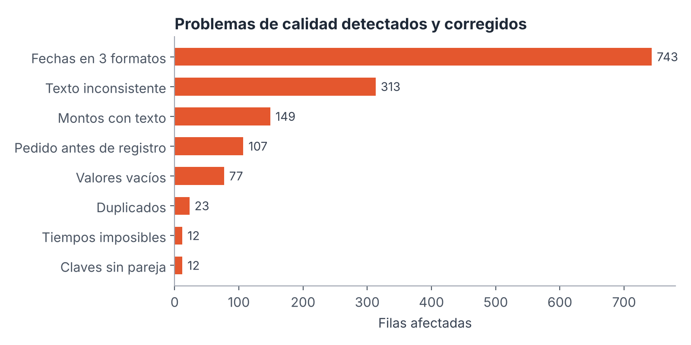
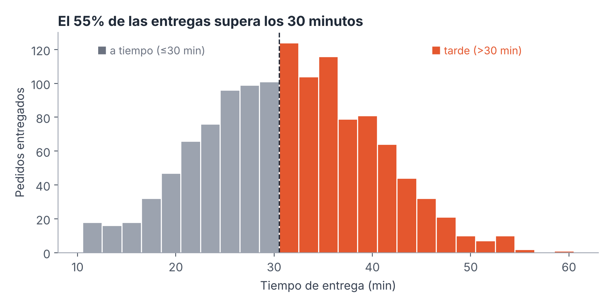
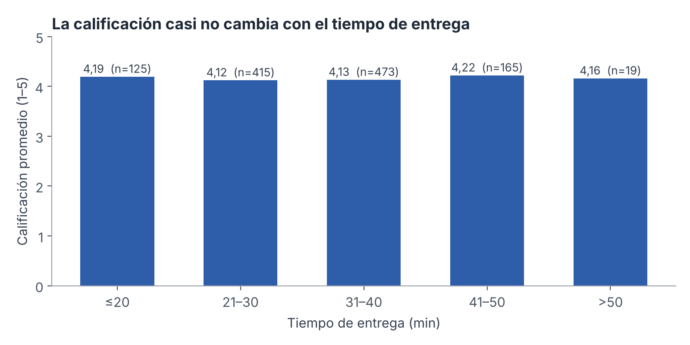
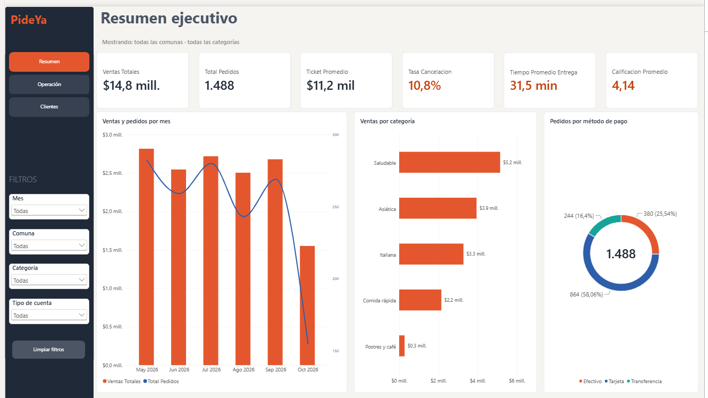
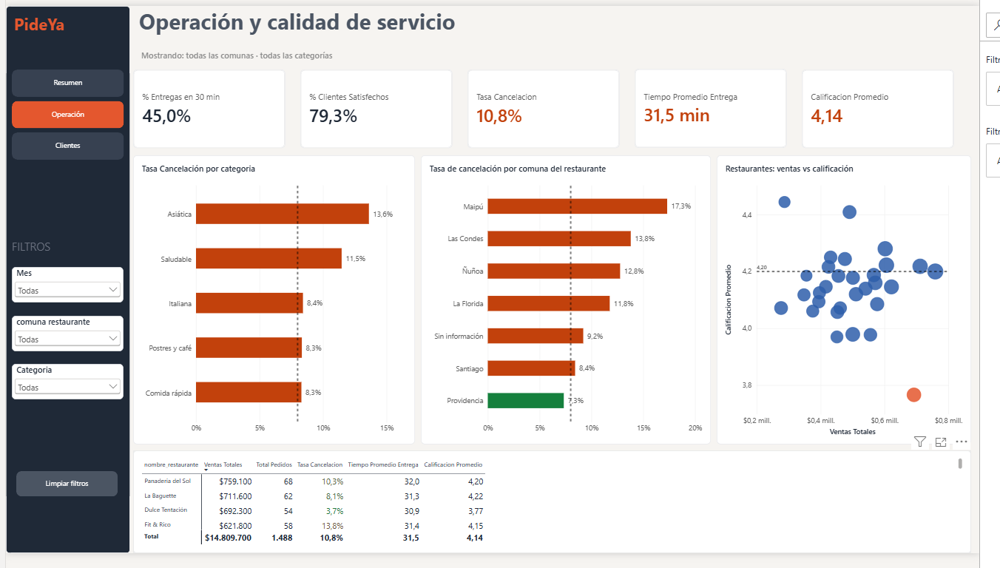
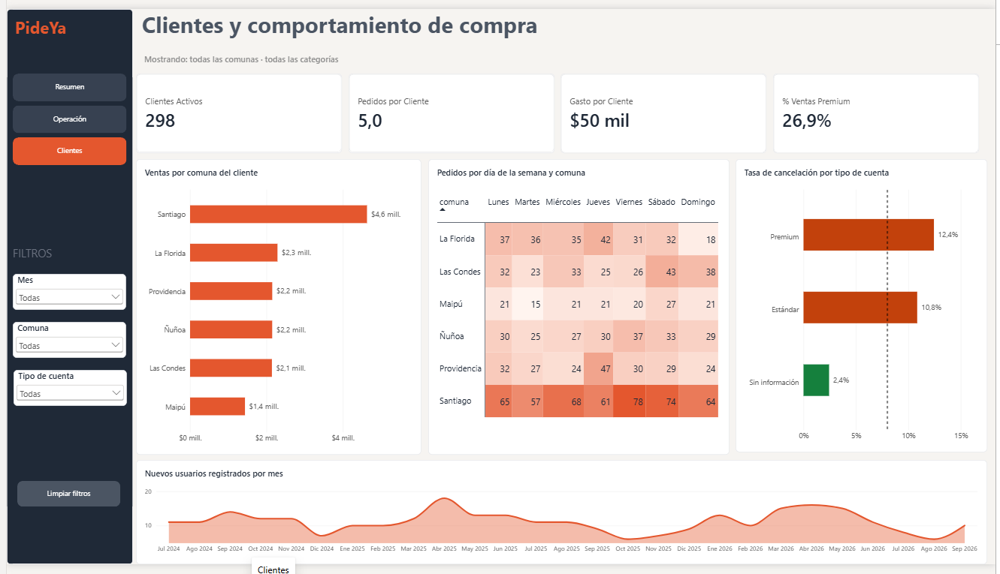

PideYa vende bien y de forma estable, pero su servicio no cumple las metas: uno de cada diez pedidos se cancela y más de la mitad de las entregas llega después de los 30 minutos.
PideYa es una aplicación de delivery de comida que opera en seis comunas de Santiago (Santiago, Providencia, Las Condes, Ñuñoa, Maipú y La Florida), conectando a 300 usuarios registrados con 30 restaurantes asociados de cinco categorías gastronómicas.
La empresa registra su operación en tres sistemas independientes —usuarios, restaurantes y pedidos— que nunca se habían consolidado. Cada sistema exporta sus datos con formatos propios, lo que produce fechas en distintos formatos, textos escritos de manera inconsistente, registros duplicados, valores vacíos y datos fuera de rango. Como consecuencia, la gerencia no cuenta con una visión única y confiable del negocio y toma decisiones sin indicadores comunes.
En este contexto, PideYa necesita responder preguntas concretas:
Diseñar e implementar una solución de visualización de datos que integre las tres fuentes de PideYa y comunique, a través de un dashboard interactivo y una narrativa visual, el desempeño comercial y la calidad del servicio para apoyar la toma de decisiones.
La solución está dirigida a tres perfiles con necesidades distintas. Por eso el dashboard se organiza en tres páginas, cada una respondiendo la pregunta principal de un público:
| Audiencia | Qué necesita saber | Página | Propósito comunicacional |
|---|---|---|---|
| Gerencia general | Estado del negocio en un vistazo: ventas, volumen y alertas de servicio. | 1 · Resumen ejecutivo | Informar y alertar con KPIs y semáforos. |
| Gerencia de operaciones | Dónde se cancela, qué restaurantes fallan y si se cumple el tiempo de entrega. | 2 · Operación y calidad de servicio | Diagnosticar y priorizar acciones correctivas. |
| Marketing y fidelización | Quiénes son los clientes, dónde y cuándo compran, y cómo se comporta Premium. | 3 · Clientes y comportamiento de compra | Segmentar y orientar campañas. |
El tono es ejecutivo: cada página parte con indicadores clave, usa un lenguaje sin tecnicismos y destaca en rojo solo lo que requiere atención. El objetivo no es mostrar todos los datos, sino que cada audiencia identifique en menos de un minuto qué está bien, qué está mal y dónde actuar.
| Tabla | Origen | Filas originales | Filas limpias | Variables relevantes |
|---|---|---|---|---|
| Usuarios | Sistema de cuentas | 308 | 300 | id_usuario, fecha_registro, comuna, tipo_cuenta (Estándar/Premium) |
| Restaurantes | Sistema de socios | 30 | 30 | id_restaurante, nombre_restaurante, categoria, comuna |
| Pedidos | Sistema transaccional | 1.515 | 1.488 | id_pedido, fecha_pedido, monto_clp, tiempo_entrega_min, metodo_pago, calificacion (1–5), estado |
El período analizado va del 1 de mayo al 19 de octubre de 2026 (octubre está incompleto). Los registros de usuarios abarcan desde julio de 2024.
Las tablas se integraron en un modelo estrella: Pedidos es la tabla de hechos y se relaciona con Usuarios y Restaurantes mediante sus claves. Se agregó una tabla Calendario para el análisis temporal, con una relación activa hacia la fecha del pedido y una inactiva hacia la fecha de registro (activada solo en la medida "Nuevos Usuarios").
La limpieza se automatizó en un script de Python (src/limpieza_pideya.py) que corrige los datos, valida el resultado y registra cada corrección en una bitácora (log_calidad_datos.csv). Esto hace que el proceso sea reproducible: si llegan datos nuevos, basta con volver a ejecutarlo.

| Problema | Tratamiento |
|---|---|
| Fechas en tres formatos (aaaa-mm-dd, dd/mm/aaaa, dd-mm-aaaa) | Conversión a un único tipo fecha. |
| Textos inconsistentes ("ÑUÑOA", "Nunoa", "Tajeta", espacios) | Normalización contra catálogos oficiales de comunas, categorías, métodos de pago y estados. |
| Montos con texto ("$11.200", "12600 CLP") | Conversión a número entero en pesos. |
| 23 filas duplicadas | Eliminadas. |
| 12 pedidos con usuario o restaurante inexistente (9999, 999) | Eliminados para no romper las relaciones del modelo. |
| 12 tiempos de entrega imposibles (−5, 0, 500, 999) | Reemplazados por vacío; no se imputan para no inventar datos. |
| Comuna o tipo de cuenta vacíos | Rotulados como "Sin información" para mantenerlos visibles. |
| 107 pedidos con fecha anterior al registro del usuario | Se conservan y se marcan con una columna de control. |
Regla de negocio aplicada en todos los indicadores: ventas, ticket, tiempo y calificación se calculan solo con pedidos entregados, ya que un pedido cancelado no genera ingreso ni recibe calificación. Los KPIs del dashboard se validaron contra cálculos independientes en Python (valores_control.csv).
Entre mayo y septiembre las ventas mensuales se mantienen entre $2,5 y $2,8 millones, con un volumen de 243 a 282 pedidos por mes. La caída visible en octubre no es real: los datos llegan solo hasta el día 19. El ticket promedio es estable, alrededor de $11.160.

El tiempo promedio es de 31,5 minutos y solo el 45% de las entregas llega en 30 minutos o menos. La distribución está centrada justo después de la meta, por lo que pequeñas mejoras operativas podrían mover una proporción importante de pedidos al rango "a tiempo".

La calificación promedio se mantiene entre 4,12 y 4,22 en todos los rangos de tiempo. Este es un hallazgo relevante: acelerar las entregas no subiría la satisfacción por sí solo. La experiencia depende más de factores asociados al restaurante (calidad del producto, exactitud del pedido) que del reparto.
| Categoría | Cancelación |
|---|---|
| Asiática | 13,6% |
| Saludable | 11,5% |
| Italiana | 8,4% |
| Comida rápida | 8,3% |
| Postres y café | 8,3% |
| Comuna del restaurante | Cancelación |
|---|---|
| Maipú | 17,3% |
| Las Condes | 13,8% |
| Ñuñoa | 12,8% |
| La Florida | 11,8% |
| Santiago | 8,4% |
| Providencia | 7,3% |
Ninguna categoría alcanza la meta de 8%, y solo Providencia la cumple a nivel de comuna. Junio (14,3%) y julio (13,6%) fueron los meses con más cancelaciones, mientras que agosto bajó a 7,0%, lo que muestra que la meta es alcanzable.
Cada gráfico se eligió según el tipo de pregunta que responde, siguiendo principios de percepción visual: la posición y la longitud son los atributos que el ojo compara con mayor precisión, por lo que se priorizaron barras sobre ángulos o áreas cuando el objetivo es comparar.
| Visualización | Pregunta que responde | Por qué este gráfico |
|---|---|---|
| Tarjetas KPI | ¿Cómo estamos hoy? | Muestran un número exacto de forma inmediata. El color semáforo (rojo/verde según la meta) permite detectar alertas sin leer cifras. |
| Columnas + línea (ventas y pedidos por mes) | ¿Cómo evolucionan las ventas? | El eje temporal continuo muestra la tendencia; combinar columnas (monto) y línea (cantidad) permite ver dos magnitudes distintas en un solo espacio. |
| Barras horizontales ordenadas (ventas por categoría, cancelación por categoría, comuna y tipo de cuenta) | ¿Quién vende o cancela más? | La longitud es el atributo más preciso para comparar. Horizontal porque los nombres son largos; ordenadas de mayor a menor para leer el ranking de inmediato. |
| Línea de referencia en barras | ¿Se cumple la meta? | Convierte la comparación en un juicio directo: toda barra que cruza la línea punteada incumple. |
| Gráfico de anillo (método de pago) | ¿Qué proporción paga con cada medio? | Es una relación parte-todo con solo tres categorías, caso en que el anillo es legible. El centro muestra el total de pedidos. |
| Dispersión (ventas vs calificación por restaurante) | ¿Hay restaurantes que venden mucho pero con mala calidad? | Cruza dos variables por restaurante y deja ver los casos atípicos. Un formato condicional destaca en rojo a los restaurantes bajo 3,9. |
| Mapa de calor (pedidos por día y comuna) | ¿Cuándo y dónde se concentra la demanda? | Una matriz de dos dimensiones donde la intensidad del color revela patrones que una tabla de números ocultaría. |
| Gráfico de área (nuevos usuarios por mes) | ¿Cómo crece la base de clientes? | Enfatiza el volumen acumulado en el tiempo y la regularidad de la captación. |
| Tabla con formato condicional (detalle por restaurante) | ¿Cuál es el valor exacto de cada restaurante? | Para consultar cifras puntuales la tabla es superior a un gráfico. El color de fuente en la tasa de cancelación guía la lectura sin ocupar espacio. |
La narrativa sigue una estructura de tres actos —contexto, conflicto y resolución— que coincide con el orden de las páginas del dashboard. Así, quien navega de izquierda a derecha recorre la historia completa.
| Acto | Página | Mensaje |
|---|---|---|
| 1. Contexto | Resumen ejecutivo | "PideYa vende $14,8 millones de forma estable, liderado por comida saludable y la comuna de Santiago… pero tres de sus seis indicadores están en rojo." |
| 2. Conflicto | Operación y calidad de servicio | "El problema está en el servicio: ninguna categoría cumple la meta de cancelación, Maipú cancela el 17% y más de la mitad de las entregas llega tarde. Además, un restaurante clave tiene la peor calificación." |
| 3. Resolución | Clientes y comportamiento de compra | "Sabemos dónde y cuándo compran los clientes, y que el segmento Premium no está recibiendo una mejor experiencia. Eso indica dónde intervenir primero." |
El dashboard se construyó en Power BI Desktop y está compuesto por tres páginas con una estructura común: panel lateral oscuro con logo, navegación y filtros; título con subtítulo dinámico; fila de KPIs; y área de gráficos.
| KPI | Cálculo | Valor | Meta |
|---|---|---|---|
| Ventas Totales | Suma de monto de pedidos entregados | $14.809.700 | — |
| Total Pedidos | Cantidad de pedidos | 1.488 | — |
| Ticket Promedio | Ventas ÷ pedidos entregados | $11.160 | — |
| Tasa de Cancelación | Cancelados ÷ total de pedidos | 10,8% | ≤ 8% |
| Tiempo Promedio de Entrega | Promedio de minutos (entregados) | 31,5 min | ≤ 30 min |
| % Entregas en 30 min | Entregas ≤ 30 min ÷ entregas con tiempo | 45,0% | — |
| Calificación Promedio | Promedio de calificación (entregados) | 4,14 | ≥ 4,2 |
| % Clientes Satisfechos | Calificaciones 4–5 ÷ calificaciones | 79,3% | — |
| Clientes Activos | Usuarios distintos con pedidos | 298 | — |
| Pedidos / Gasto por Cliente | Pedidos o ventas ÷ clientes activos | 5,0 / $49.697 | — |
| % Ventas Premium | Ventas Premium ÷ ventas totales | 26,9% | — |
Las metas fueron definidas por el equipo como supuestos de referencia, ya que la empresa no entregó objetivos formales. Todas las medidas se implementaron en DAX dentro de una tabla de medidas organizada por carpetas (Ventas, Servicio, Clientes, Metas y colores, Textos).



| Carpeta | Contenido |
|---|---|
| data/raw · data/processed | Datos originales sin modificar y datos limpios listos para Power BI, con bitácora de calidad. |
| src/ | limpieza_pideya.py: limpieza, validación y exportación. |
| dashboard/ | PideYa_dashboard.pbix, modelo TMDL (medidas y relaciones), tema de colores, guía de construcción y valores de control. |
| images/ | Capturas del dashboard, bocetos y gráficos del análisis exploratorio. |
| docs/ | Informe ejecutivo (PDF) y presentación ejecutiva (PPTX). |
| # | Acción | Detalle | Indicador de seguimiento |
|---|---|---|---|
| 1 | Plan focalizado de cancelaciones | Revisar disponibilidad y tiempos de preparación de los restaurantes de Maipú y Las Condes, y de la categoría Asiática. | Tasa de cancelación ≤ 8% en 3 meses. |
| 2 | Programa de calidad para restaurantes | Plan de mejora con Dulce Tentación y con los locales bajo 4,0 estrellas; evaluar su visibilidad en la app si no mejoran. | Calificación por restaurante ≥ 4,0. |
| 3 | Rediseñar el beneficio Premium | Prioridad de despacho, seguimiento del pedido y compensación automática por demoras o cancelaciones. | Cancelación Premium ≤ Estándar. |
| 4 | Gestión de la promesa de entrega | Ajustar la cobertura de repartidores en los días y comunas de mayor demanda (Santiago, viernes y sábado). | % de entregas ≤ 30 min sobre 60%. |
| 5 | Mejorar la calidad de los datos | Formularios con listas cerradas (comuna, categoría, método de pago), registrar el motivo de cancelación y validar fechas al ingreso. | Cero correcciones manuales en la carga. |